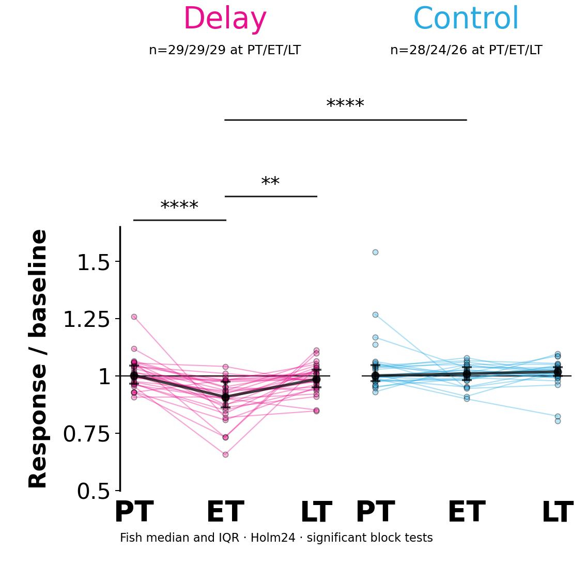
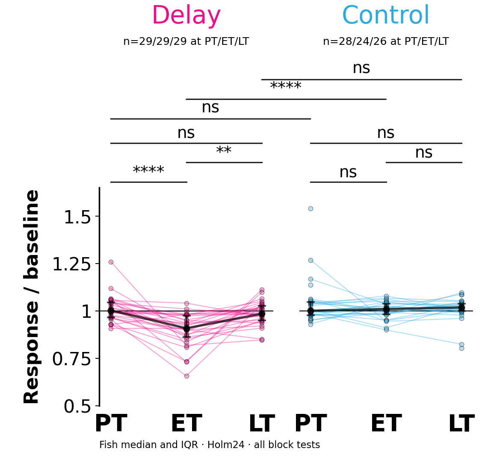
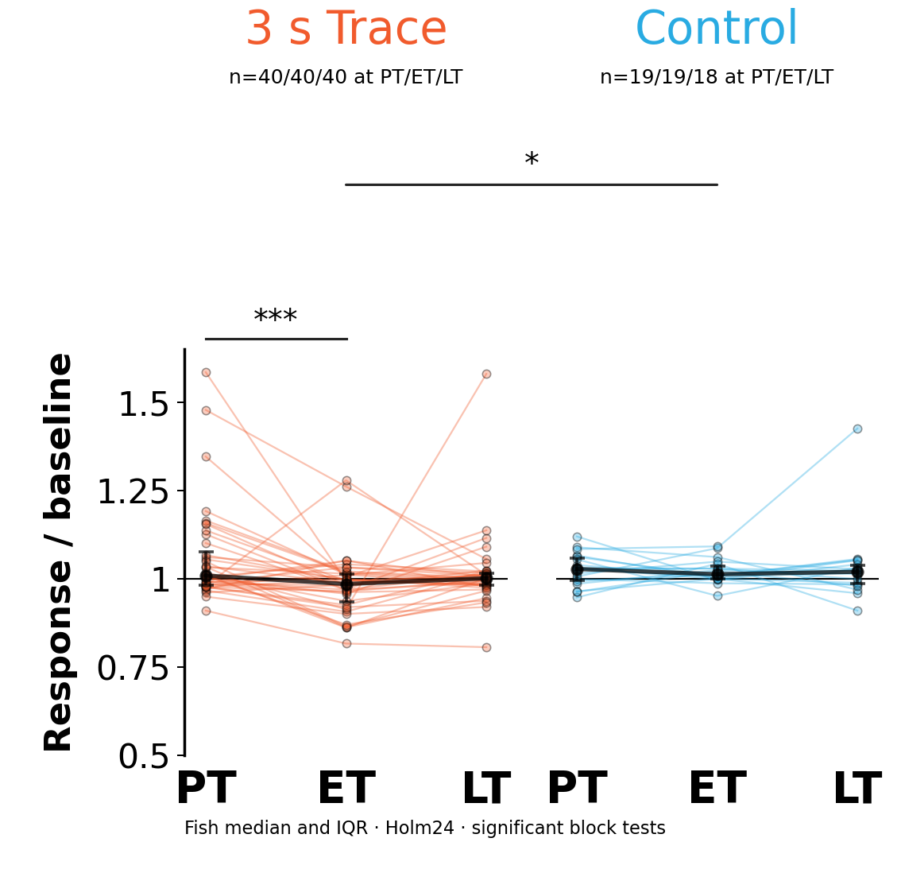
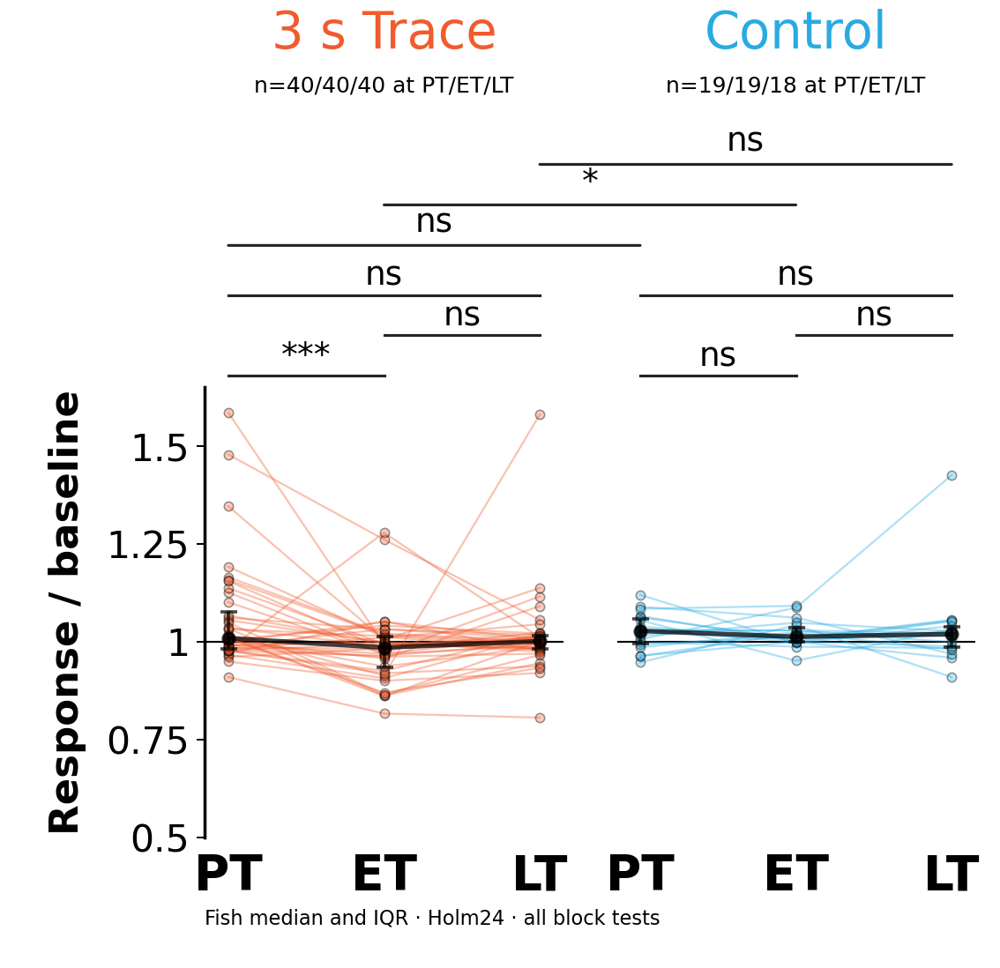
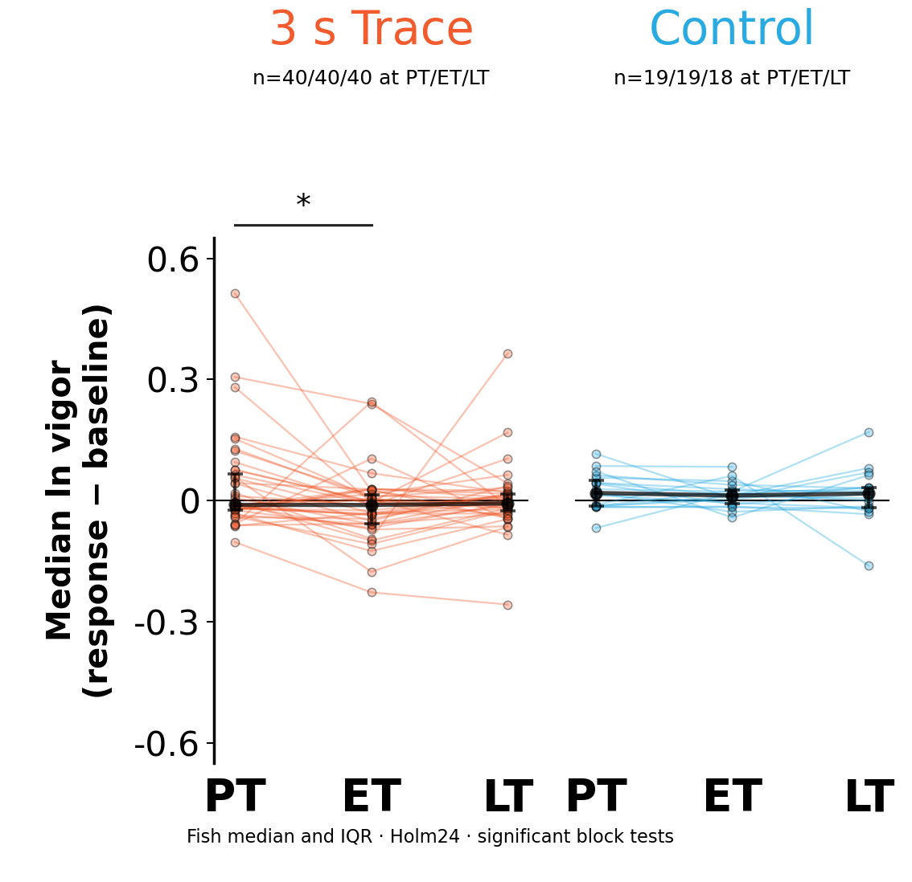
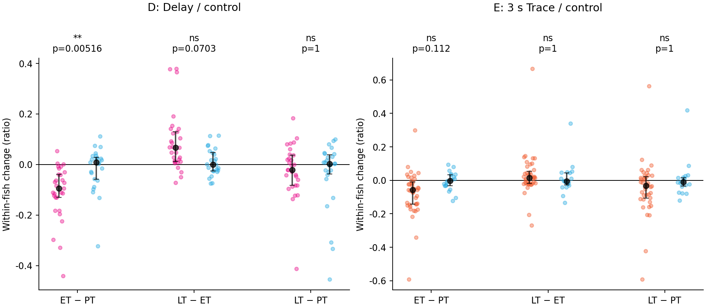
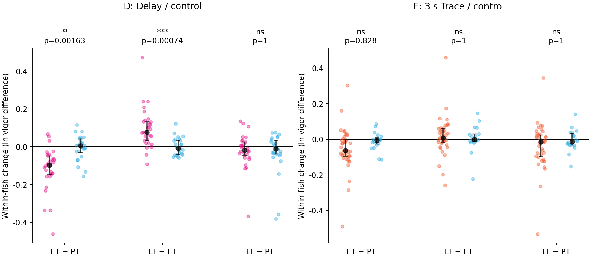

D · A · Mean bout-vigor ratio


Choose between A and B. D = Delay; E = 3 s Trace. These are two outcomes, shown for two panels. The checkbox changes statistical annotations only; it does not create another version.
No bout → vigor is NaN → skip that frame in every calculation. Example: bout values [2, 4] with a stationary period between them have mean 3. The stationary period contributes no zero and no observation. If a whole baseline or response has no bout, its trial ratio/log difference cannot be calculated and is excluded.
A compares mean bout vigor (unchanged = 1). B compares median natural-log bout vigor (unchanged = 0). Neither measures how often the fish moves. PT 10–14; ET 65–69; LT 90–94. Minimum eligible trials per fish/block: D 3; E 1.








A is intuitive but more sensitive to peaks and small baselines. B is robust and treats proportional increases/decreases symmetrically, but requires positive vigor and uses less intuitive units.
Suggested primary: B for typical bout intensity; A as sensitivity. Choose A if average intensity including peaks is the intended outcome. Do not choose by significance. Full critique · Medians and fish counts · Excluded trial counts


Exploratory alternatives. Main whiskers = fish IQR. Change plots show fish median/IQR. Effect estimates and pointwise 95% bootstrap intervals are provided separately. CSV
| version | panel | family | condition | left | right | test | n_control | n_conditioned | n_pairs | statistic | p_raw | method | rank_biserial | median_change | zero_differences | absolute_difference_ties | median_change_conditioned | median_change_control | descriptive_difference_of_median_changes | p_holm24 | stars |
|---|---|---|---|---|---|---|---|---|---|---|---|---|---|---|---|---|---|---|---|---|---|
| ratio | D | between | delay vs control | 0 | 0 | Mann-Whitney U | 28 | 29 | — | 375 | 0.62636 | asymptotic; tie/continuity corrected | -0.076355 | — | — | — | — | — | — | 1 | ns |
| ratio | D | between | delay vs control | 1 | 1 | Mann-Whitney U | 24 | 29 | — | 90 | 4.2017e-06 | asymptotic; tie/continuity corrected | -0.74138 | — | — | — | — | — | — | 9.6638e-05 | **** |
| ratio | D | between | delay vs control | 2 | 2 | Mann-Whitney U | 26 | 29 | — | 277 | 0.093466 | asymptotic; tie/continuity corrected | -0.26525 | — | — | — | — | — | — | 1 | ns |
| ratio | D | within | delay | 0 | 1 | paired Wilcoxon signed-rank | — | — | 29 | 12 | 2.6077e-07 | exact; zero_method=wilcox | — | -0.094335 | 0 | False | — | — | — | 6.2585e-06 | **** |
| ratio | D | within | control | 0 | 1 | paired Wilcoxon signed-rank | — | — | 24 | 137 | 0.72574 | exact; zero_method=wilcox | — | 0.0090449 | 0 | False | — | — | — | 1 | ns |
| ratio | D | change | delay vs control | 0 | 1 | Mann-Whitney U on within-fish changes | 24 | 29 | — | 143 | 0.00025807 | asymptotic; tie/continuity corrected | -0.58908 | — | — | — | -0.094335 | 0.0090449 | -0.10338 | 0.0051614 | ** |
| ratio | D | within | delay | 1 | 2 | paired Wilcoxon signed-rank | — | — | 29 | 44 | 5.3361e-05 | exact; zero_method=wilcox | — | 0.067307 | 0 | False | — | — | — | 0.0011206 | ** |
| ratio | D | within | control | 1 | 2 | paired Wilcoxon signed-rank | — | — | 24 | 128 | 0.54567 | exact; zero_method=wilcox | — | 0.00048204 | 0 | False | — | — | — | 1 | ns |
| ratio | D | change | delay vs control | 1 | 2 | Mann-Whitney U on within-fish changes | 24 | 29 | — | 510 | 0.0039046 | asymptotic; tie/continuity corrected | 0.46552 | — | — | — | 0.067307 | 0.00048204 | 0.066825 | 0.070282 | ns |
| ratio | D | within | delay | 0 | 2 | paired Wilcoxon signed-rank | — | — | 29 | 169 | 0.30419 | exact; zero_method=wilcox | — | -0.02159 | 0 | False | — | — | — | 1 | ns |
| ratio | D | within | control | 0 | 2 | paired Wilcoxon signed-rank | — | — | 26 | 171 | 0.92046 | exact; zero_method=wilcox | — | 0.0029667 | 0 | False | — | — | — | 1 | ns |
| ratio | D | change | delay vs control | 0 | 2 | Mann-Whitney U on within-fish changes | 26 | 29 | — | 355 | 0.71701 | asymptotic; tie/continuity corrected | -0.058355 | — | — | — | -0.02159 | 0.0029667 | -0.024556 | 1 | ns |
| ratio | E | between | trace vs control | 0 | 0 | Mann-Whitney U | 19 | 40 | — | 371 | 0.89033 | asymptotic; tie/continuity corrected | -0.023684 | — | — | — | — | — | — | 1 | ns |
| ratio | E | between | trace vs control | 1 | 1 | Mann-Whitney U | 19 | 40 | — | 192 | 0.0023528 | asymptotic; tie/continuity corrected | -0.49474 | — | — | — | — | — | — | 0.044704 | * |
| ratio | E | between | trace vs control | 2 | 2 | Mann-Whitney U | 18 | 40 | — | 281 | 0.18704 | asymptotic; tie/continuity corrected | -0.21944 | — | — | — | — | — | — | 1 | ns |
| ratio | E | within | trace | 0 | 1 | paired Wilcoxon signed-rank | — | — | 40 | 122 | 4.4042e-05 | exact; zero_method=wilcox | — | -0.057073 | 0 | False | — | — | — | 0.00096892 | *** |
| ratio | E | within | control | 0 | 1 | paired Wilcoxon signed-rank | — | — | 19 | 90 | 0.85957 | exact; zero_method=wilcox | — | -0.002193 | 0 | False | — | — | — | 1 | ns |
| ratio | E | change | trace vs control | 0 | 1 | Mann-Whitney U on within-fish changes | 19 | 40 | — | 212 | 0.0065835 | asymptotic; tie/continuity corrected | -0.44211 | — | — | — | -0.057073 | -0.002193 | -0.05488 | 0.11192 | ns |
| ratio | E | within | trace | 1 | 2 | paired Wilcoxon signed-rank | — | — | 40 | 270 | 0.060269 | exact; zero_method=wilcox | — | 0.016112 | 0 | False | — | — | — | 0.90404 | ns |
| ratio | E | within | control | 1 | 2 | paired Wilcoxon signed-rank | — | — | 18 | 81 | 0.86504 | exact; zero_method=wilcox | — | -0.0044891 | 0 | False | — | — | — | 1 | ns |
| ratio | E | change | trace vs control | 1 | 2 | Mann-Whitney U on within-fish changes | 18 | 40 | — | 413 | 0.37757 | asymptotic; tie/continuity corrected | 0.14722 | — | — | — | 0.016112 | -0.0044891 | 0.020601 | 1 | ns |
| ratio | E | within | trace | 0 | 2 | paired Wilcoxon signed-rank | — | — | 40 | 227 | 0.013026 | exact; zero_method=wilcox | — | -0.031624 | 0 | False | — | — | — | 0.20841 | ns |
| ratio | E | within | control | 0 | 2 | paired Wilcoxon signed-rank | — | — | 18 | 71 | 0.55087 | exact; zero_method=wilcox | — | -0.0095166 | 0 | False | — | — | — | 1 | ns |
| ratio | E | change | trace vs control | 0 | 2 | Mann-Whitney U on within-fish changes | 18 | 40 | — | 285 | 0.21052 | asymptotic; tie/continuity corrected | -0.20833 | — | — | — | -0.031624 | -0.0095166 | -0.022107 | 1 | ns |
| log | D | between | delay vs control | 0 | 0 | Mann-Whitney U | 28 | 29 | — | 416 | 0.87947 | asymptotic; tie/continuity corrected | 0.024631 | — | — | — | — | — | — | 1 | ns |
| log | D | between | delay vs control | 1 | 1 | Mann-Whitney U | 24 | 29 | — | 98 | 8.265e-06 | asymptotic; tie/continuity corrected | -0.71839 | — | — | — | — | — | — | 0.00018183 | *** |
| log | D | between | delay vs control | 2 | 2 | Mann-Whitney U | 26 | 29 | — | 358 | 0.75513 | asymptotic; tie/continuity corrected | -0.050398 | — | — | — | — | — | — | 1 | ns |
| log | D | within | delay | 0 | 1 | paired Wilcoxon signed-rank | — | — | 29 | 19 | 1.1437e-06 | exact; zero_method=wilcox | — | -0.096444 | 0 | False | — | — | — | 2.7448e-05 | **** |
| log | D | within | control | 0 | 1 | paired Wilcoxon signed-rank | — | — | 24 | 148 | 0.96645 | exact; zero_method=wilcox | — | 0.0053194 | 0 | False | — | — | — | 1 | ns |
| log | D | change | delay vs control | 0 | 1 | Mann-Whitney U on within-fish changes | 24 | 29 | — | 127 | 8.1477e-05 | asymptotic; tie/continuity corrected | -0.63506 | — | — | — | -0.096444 | 0.0053194 | -0.10176 | 0.0016295 | ** |
| log | D | within | delay | 1 | 2 | paired Wilcoxon signed-rank | — | — | 29 | 26 | 3.9823e-06 | exact; zero_method=wilcox | — | 0.077751 | 0 | False | — | — | — | 9.1594e-05 | **** |
| log | D | within | control | 1 | 2 | paired Wilcoxon signed-rank | — | — | 24 | 145 | 0.89957 | exact; zero_method=wilcox | — | -0.0074755 | 0 | False | — | — | — | 1 | ns |
| log | D | change | delay vs control | 1 | 2 | Mann-Whitney U on within-fish changes | 24 | 29 | — | 580 | 3.5254e-05 | asymptotic; tie/continuity corrected | 0.66667 | — | — | — | 0.077751 | -0.0074755 | 0.085226 | 0.00074033 | *** |
| log | D | within | delay | 0 | 2 | paired Wilcoxon signed-rank | — | — | 29 | 172 | 0.33573 | exact; zero_method=wilcox | — | -0.017523 | 0 | False | — | — | — | 1 | ns |
| log | D | within | control | 0 | 2 | paired Wilcoxon signed-rank | — | — | 26 | 150 | 0.53166 | exact; zero_method=wilcox | — | -0.011265 | 0 | False | — | — | — | 1 | ns |
| log | D | change | delay vs control | 0 | 2 | Mann-Whitney U on within-fish changes | 26 | 29 | — | 368 | 0.88606 | asymptotic; tie/continuity corrected | -0.023873 | — | — | — | -0.017523 | -0.011265 | -0.0062578 | 1 | ns |
| log | E | between | trace vs control | 0 | 0 | Mann-Whitney U | 19 | 40 | — | 325 | 0.37664 | asymptotic; tie/continuity corrected | -0.14474 | — | — | — | — | — | — | 1 | ns |
| log | E | between | trace vs control | 1 | 1 | Mann-Whitney U | 19 | 40 | — | 234 | 0.018259 | asymptotic; tie/continuity corrected | -0.38421 | — | — | — | — | — | — | 0.32866 | ns |
| log | E | between | trace vs control | 2 | 2 | Mann-Whitney U | 18 | 40 | — | 268 | 0.12408 | asymptotic; tie/continuity corrected | -0.25556 | — | — | — | — | — | — | 1 | ns |
| log | E | within | trace | 0 | 1 | paired Wilcoxon signed-rank | — | — | 40 | 166 | 0.0007144 | exact; zero_method=wilcox | — | -0.063159 | 0 | False | — | — | — | 0.013574 | * |
| log | E | within | control | 0 | 1 | paired Wilcoxon signed-rank | — | — | 19 | 70 | 0.33207 | exact; zero_method=wilcox | — | -0.0056859 | 0 | False | — | — | — | 1 | ns |
| log | E | change | trace vs control | 0 | 1 | Mann-Whitney U on within-fish changes | 19 | 40 | — | 258 | 0.048725 | asymptotic; tie/continuity corrected | -0.32105 | — | — | — | -0.063159 | -0.0056859 | -0.057473 | 0.82832 | ns |
| log | E | within | trace | 1 | 2 | paired Wilcoxon signed-rank | — | — | 40 | 309 | 0.1787 | exact; zero_method=wilcox | — | 0.0084307 | 0 | False | — | — | — | 1 | ns |
| log | E | within | control | 1 | 2 | paired Wilcoxon signed-rank | — | — | 18 | 72 | 0.57984 | exact; zero_method=wilcox | — | -0.0013035 | 0 | False | — | — | — | 1 | ns |
| log | E | change | trace vs control | 1 | 2 | Mann-Whitney U on within-fish changes | 18 | 40 | — | 380 | 0.74311 | asymptotic; tie/continuity corrected | 0.055556 | — | — | — | 0.0084307 | -0.0013035 | 0.0097342 | 1 | ns |
| log | E | within | trace | 0 | 2 | paired Wilcoxon signed-rank | — | — | 40 | 270 | 0.060269 | exact; zero_method=wilcox | — | -0.014756 | 0 | False | — | — | — | 0.96431 | ns |
| log | E | within | control | 0 | 2 | paired Wilcoxon signed-rank | — | — | 18 | 78 | 0.76603 | exact; zero_method=wilcox | — | -0.013526 | 0 | False | — | — | — | 1 | ns |
| log | E | change | trace vs control | 0 | 2 | Mann-Whitney U on within-fish changes | 18 | 40 | — | 311 | 0.41498 | asymptotic; tie/continuity corrected | -0.13611 | — | — | — | -0.014756 | -0.013526 | -0.0012297 | 1 | ns |
Placeholder: no authenticated cohort inputs for this comparison.
Existing stars compare blocks or conditions, not zero. A separate exploratory audit finds Delay ET below zero: 27/29 fish; median B=-0.0752 (about 7.2% reduction), Holm12 Wilcoxon p=0.00000755; symmetry-free sign test p=0.0000195. Trace ET does not establish a reduction below zero after correction. Original stars are unchanged.
Statistical review and processing bullets · Zero-reference results · Combined Holm36 sensitivity · Trial exclusions